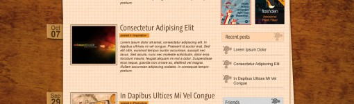

可能因为我曾是校园霸凌的受害者，在小学时候，高中也有一小段时间，所以我特别有感触，很多镜头虽然没有很恐怖，却也不太敢看。 印象最深的是，易遥一个人站在河边，她说我不是杀人犯，可是全校的同学们没有人相信，他们一直起着哄说你跳啊你去死啊，最后易遥说出来的那些话，那段剧情，我全程哭。 很多事情，真的不是过去就过去了，它在心底是会留下痕迹的。这世间的道理千万种千万句，终究抵不过当事人自己心底那句“过不过得去”。 电影的最后，现身的一个个真实的人物，他们诉说着自己曾经遭受的那些校园霸凌，以及给自己带来的伤害，无论是身体上还是精神上的。 被掌掴，被围攻，被谩骂，被诽谤，被诋毁，被孤立，被侮辱，被殴打，被堵在学校门口不让你回家，被迫吃那些馊了的食物，被人扔掉自己的书本，被各种各样所谓的“恶作剧”伤害，甚至被莫须有的罪名而被学校开除... ... 这些或大或小的伤害，造成的后遗症就是不自信，哪怕现如今的他们看起来很好，可也只是看起来而已。 那些校园霸凌受害者的孩子们，长大后变成什么样了？是否勇敢快乐？还是怯懦悲伤？是否变成了理想中的自己？是否告白了那个受伤害的自己... ... 每个人的心底都有阴霾。 在那些我们看不到的角落里，每个人也许都在默默承受着看不见的伤害。
悲伤逆流成河影评
December 27th, 2010 | by admin | updates
Dec
27
